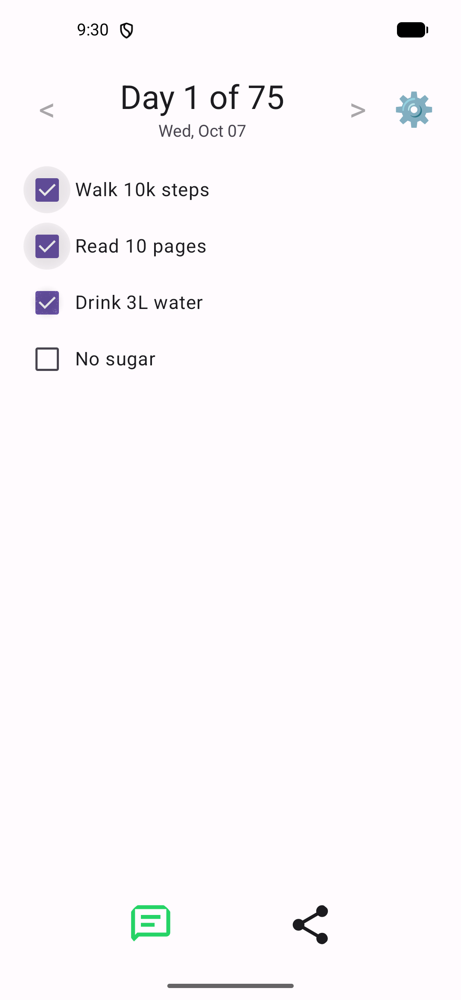
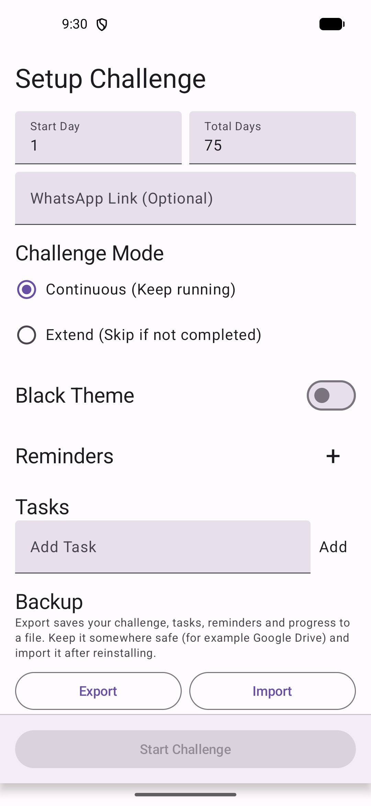
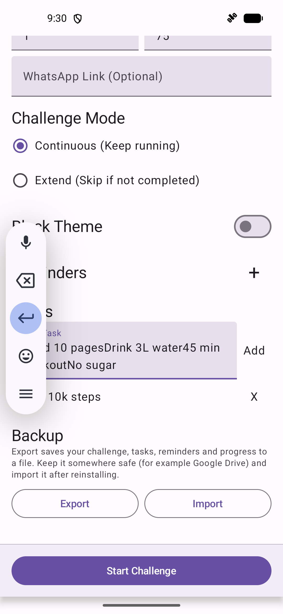
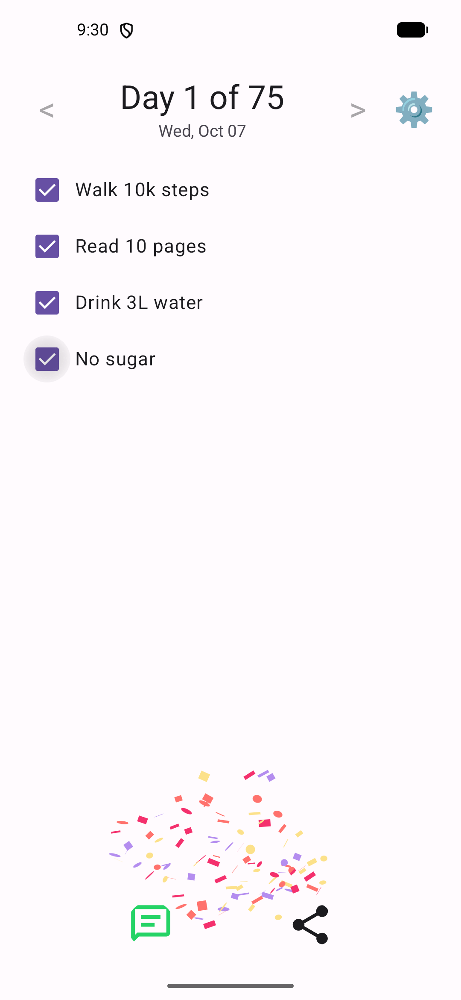
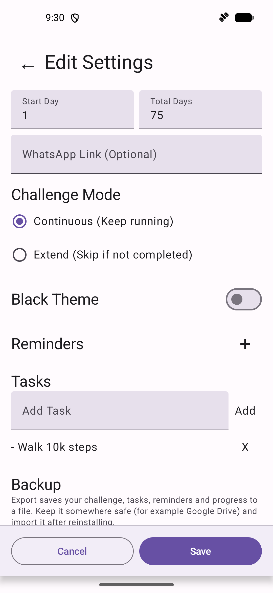
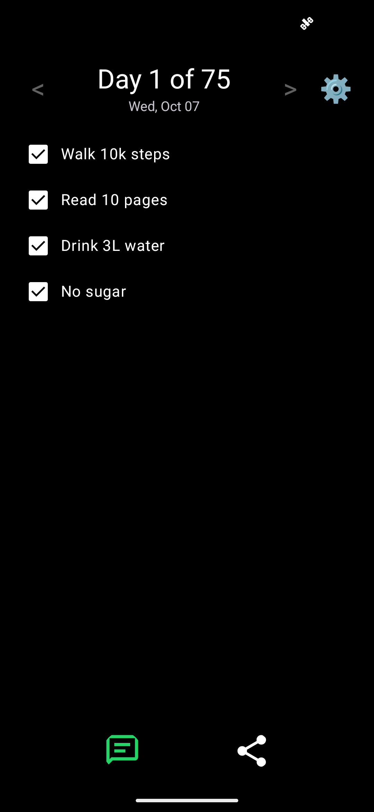
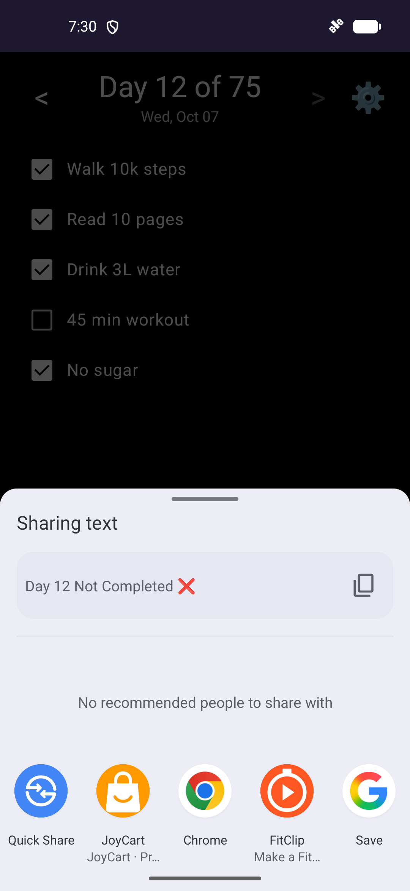

navforu/tasky
Kotlin / Jetpack Compose app, unit tests, upload keystore (as CI secrets),
version.properties, and the
release.yml workflow that publishes here.
A personal Android tracker for 75-day habit challenges — or any length you choose.
Android 7.0+. Educational / individual use only. Your data stays on the device — privacy policy.

Product
Set up a challenge, tick daily tasks, review history, share status, and back up your progress — all offline on the phone.






Everyday use
Built for people running a personal challenge, not for teams or coaches.
Add daily rules as tasks, leave Total Days at 75, tap Start Challenge.
Set Start Day to where you already are so you don’t lose the streak.
Calendar days always advance, or only move forward when every task is ticked.
Message or share “Day 12 ✅ / ❌” to the app you pick. Reminder notifications nudge you.
Export a backup JSON, then Import after reinstall.
True-black theme for late check-ins without glare.
Engineering
The Android source stays private. This public repo only holds the showcase, license, disclaimer, and signed APK releases.
Kotlin / Jetpack Compose app, unit tests, upload keystore (as CI secrets),
version.properties, and the
release.yml workflow that publishes here.
This site (GitHub Pages), screenshots, MIT license, disclaimer, and every
Tasky-x.y.z.n.apk on Releases — overwritten from
public/ on each successful publish.
main
CI bumps the version, runs JVM unit tests, and builds a release APK signed with the upload keystore from GitHub secrets (not a throwaway debug key).
Pull requests stop after test/build. On main, a fine-grained
PUBLIC_REPO_TOKEN (Contents: read/write on this repo only) checks out
tasky-app, syncs the private repo’s public/ folder with
rsync, and pushes.
CI creates tag vMAJOR.MINOR.PATCH.BUILD here, attaches
Tasky-….apk and a .sha256 checksum, then commits the new
version.properties back to the private repo.
Releases use MAJOR.MINOR.PATCH.BUILD. Every publish increments the last
digit unless you flip a bump flag before pushing.